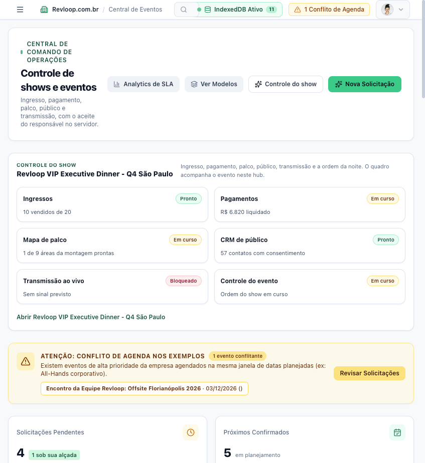
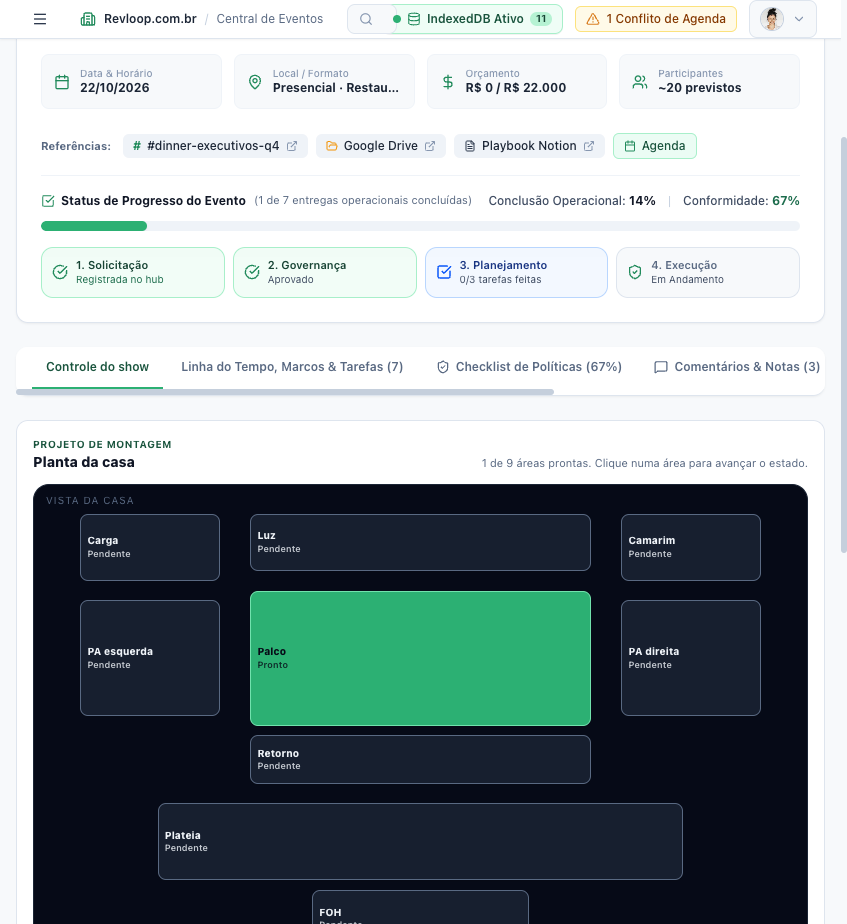
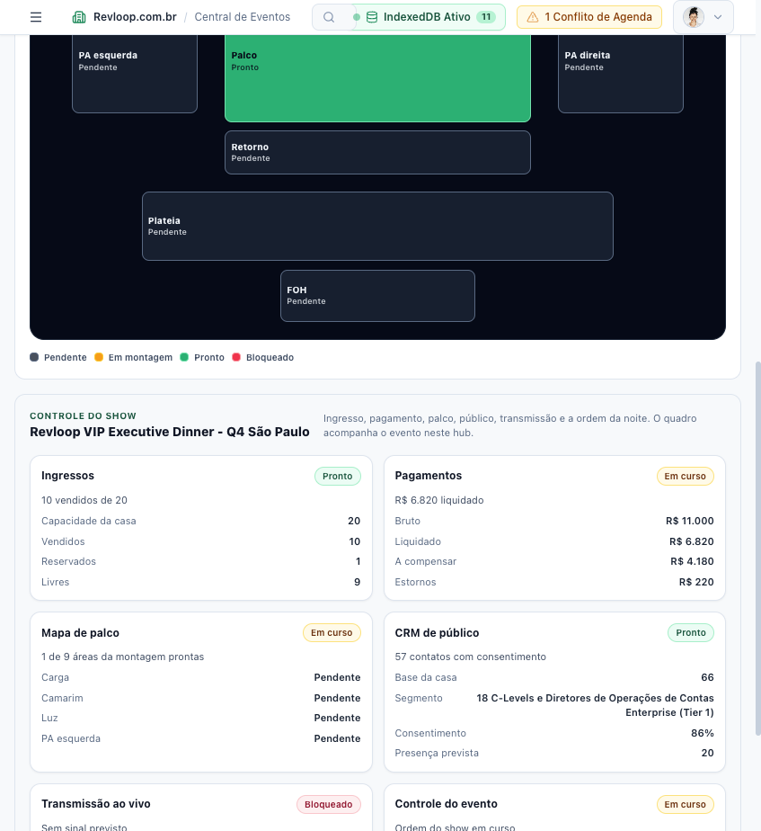

Antes
A data vive numa planilha, o “pode confirmar” vive numa mensagem e o mapa do palco vive na cabeça de quem chegou primeiro.
Solution framing · Apresentando a solução
Revloop é a central em que a equipe pede o evento, enxerga o conflito de data, recebe o aceite de um único responsável e acompanha a montagem do palco no mesmo registro.
O que sua empresa faz
A Revloop organiza shows e eventos internos num só lugar. Qualquer membro registra a solicitação. O hub mostra se a data esbarra em outro compromisso. Só a pessoa designada aceita ou recusa, e essa regra vale no servidor.
Depois do aceite, o mesmo evento carrega o quadro da noite e a planta da casa. A equipe marca cada área da montagem — carga, luz, palco, plateia, FOH — e o estado fica gravado.
A data vive numa planilha, o “pode confirmar” vive numa mensagem e o mapa do palco vive na cabeça de quem chegou primeiro.
Pedido, conflito, decisão e montagem são o mesmo evento. A aprovação tem um nome. A casa tem um estado.
Proposta de valor
O produtor conduz pedido, conflito de data, aceite e montagem de palco num único registro, com a aprovação travada em quem foi designado.
A solicitação entra no hub, aberta a quem está no workspace.
Aceitar ou recusar é exclusivo do responsável. Outro membro recebe recusa do servidor.
A planta da montagem muda de estado no evento e continua lá na próxima abertura.
Ingresso, pagamento, público, transmissão e ordem do show acompanham o mesmo registro.
Demonstração do produto
Com o servidor local ligado, abra http://127.0.0.1:3000. O comando é npm run dev na pasta do projeto.
As telas desta passagem estão nos anexos, capturadas do hub em execução:
Estágio atual do produto
Tech stack
Cada mudança — aceite, tarefa, área da planta — entra num registro encadeado por hash, gravado em arquivo com escrita atômica. A identidade da sessão vai num cookie assinado. O cliente guarda uma cópia dos eventos para consulta offline.
Painel, solicitações, próximos e passados, modelos, políticas, controle do show e a planta da casa. Os gráficos de orçamento usam Recharts. Os ícones vêm do Lucide.
O mínimo produto viável
A hipótese principal é esta: o produtor adota o hub quando qualquer pessoa pode pedir o evento, só o responsável designado pode aceitar, e a montagem do palco é acompanhada no mesmo registro.
A hipótese é sobre autoridade e estado. Se o aceite fosse só um botão na tela, o teste não distinguiria “a pessoa clicou” de “o servidor impediu o colega”. A planta também precisa sobreviver ao recarregar, senão o controle da montagem é teatro.
Agenda, mensagens, arquivos, playbooks, bilheteria, gateway e encoder ainda não estão ligados. Os exemplos semeados deixam o produtor reagir ao fluxo — conflito, quadro da noite, ordem do show — antes de pagar essa integração. A próxima hipótese é trocar esse quadro por sinal real.
Anexo · Visão geral

Anexo · Planta da casa

Anexo · Controle do show
